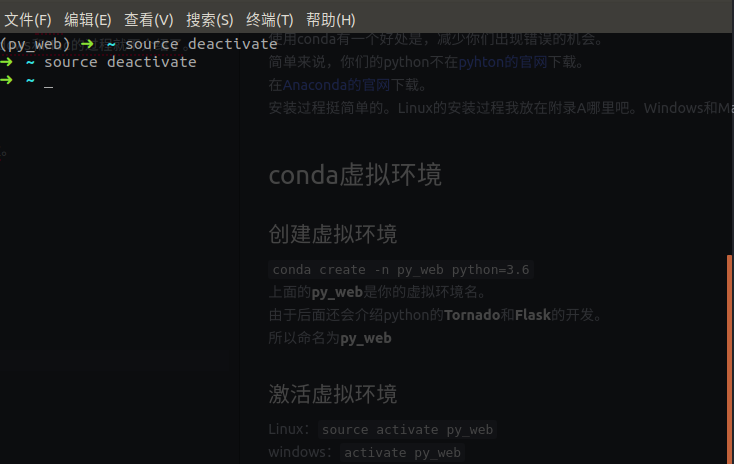

虚拟环境
Python的虚拟环境配置有两种方法，一种是conda，另一种是virtualenv
建议大家使用第一种conda。
使用conda有一个好处是，减少你们出现错误的机会。
简单来说，你们的python不在pyhton的官网下载。
在Anaconda的官网下载。
安装过程挺简单的。Linux的安装过程我放在附录A哪里吧。Windows和Mac的过程就不介绍了。
conda虚拟环境
创建虚拟环境
conda create -n py_web python=3.6
上面的py_web是你的虚拟环境名。
激活虚拟环境
Linux：source activate py_web
windows：activate py_web
激活后，可以发现终端的左边多了一个(py_web)
退出虚拟环境
Linux：source deactivate
windows：deactivate
效果图

virtualenv虚拟环境
这种创建方法只介绍Linux下的创建方法。
创建虚拟环境
这个最好先找一个你之后要创建项目的位置
例如桌面，先在桌面创建一个名为python_web的目录
进入该目录，打开终端
输入virtualenv -p /usr/bin/python3 venv
这样我们就创建了一个名为venv的python虚拟环境。
上面代码中的/usr/bin/python3是系统自带的python3路径。
激活虚拟环境
source /home/you_username/Desktop/python_web/venv/bin/activate
注意把上面代码中的you_username替换成你的用户名。
简单来说就是运行了venv目录下的bin目录的activate文件。
由于该方法在安装和使用过程中会有很多错误的发生。
解决方法，后期我会总结到附录A中。
退出虚拟环境
deactivate
必要的包安装
请保证在虚拟环境中，执行下面的代码。
pip install tornado==5.1.1
pip install django==2.0
pip install flask==1.0.2